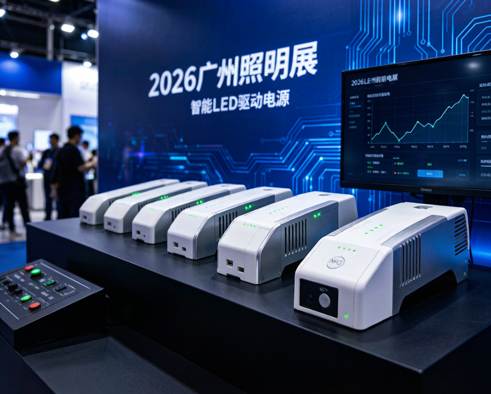
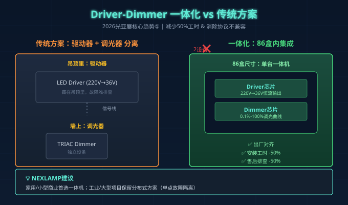
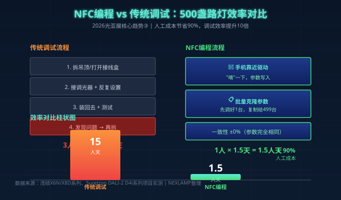
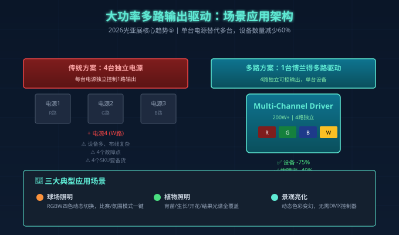

6月9日-12日的广州光亚展刚落幕一个月，但展会现场那些"会说话、会思考"的驱动电源还留在我的笔记本里。今年最强烈的信号是：LED驱动电源正在从"藏在吊顶里的黑盒"变成"系统级智能节点"。
如果你还以为驱动电源就是"把220V变成36V"的零件，2026下半年你的项目可能会被同行碾压。
一、第一个趋势：Driver-Dimmer一体化，调光器和驱动器"合体"

传统方案里，灯具里塞一个驱动器，墙上装一个调光器，两台设备、两套协议、两个故障点。黛米、Suretron、OTTIMA在光亚展都把"驱动器+调光器一体机"摆到了C位——单86盒尺寸，同时解决供电和调光。
这种变化带来的3个实际好处：
- 安装工时直接砍掉50%。不用再在吊顶里找位置放驱动器，不用额外走调光信号线。
- 调光曲线出厂就对齐。驱动芯片和调光芯片同一块PCB上，0.1%-100%线性度天然保证。
- 售后排查时间减半。出问题只有一台设备，不用怀疑"是驱动坏了还是调光器坏了"。
NEXLAMP观察：对家用和小型商业项目，一体机已经是首选。但对工业/大型项目，传统分布式方案在维护性上仍有优势——一台坏了不影响其他灯具。
二、第二个趋势：D4i数据采集，每台驱动都成"数据终端"
崧盛、茂硕、英飞特在光亚展不约而同地把"驱动+数据采集"做成标配。D4i认证的驱动电源能实时上报：
- 当前功率（精度±3%）
- 累计能耗（kWh）
- 运行小时数
- LED光衰补偿值
- 灯具健康度评分
这个变化对工程商意味着什么？
以前市政路灯项目交付完就"断联"了，灯具坏了才知道坏。现在每台驱动都在云端"打卡"——管理人员在办公室里就能看到哪条路的哪盏灯该换了、哪条路的电费异常、哪个时段的能耗最高。
茂硕X8D系列在3.2馆C02展位现场演示了智慧路灯管理后台，2000盏路灯的实时数据刷新只需2秒。这种能力5年前只有ABB/Schneider能做到，现在国产D4i驱动只要30-80元/台就能实现。
三、第三个趋势：NFC离线编程，调试效率提升10倍

传统驱动调试需要：拆吊顶 → 接调光器 → 现场反复设置参数 → 装回去 → 发现不对 → 再拆。
NFC编程驱动的流程是：手机靠近驱动，"嘀"一下，参数写入。
茂硕X6N/X8D系列、Suretron DALI-2 D4i系列都支持NFC离线编程。实际项目数据：
- 传统调试：500盏路灯需要3个工程师×5天 = 15人天
- NFC编程：500盏路灯 = 1个工程师×1.5天 = 1.5人天
- 效率提升10倍，人工成本节省90%
更关键的是，参数可以批量复制——先把一台调到最佳状态，手机"克隆"参数，再"嘀"一下传给剩下的499台。一致性不再是"师傅手感"的玄学，而是工程标准化。
四、第四个趋势：多协议5合1，一个SKU吃下所有项目
展会最让我意外的是多协议5合1驱动器的普及程度。明纬、茂硕、崧盛、得米都推出了"一台电源支持TRIAC/0-10V/PWM/DALI/Zigbee"的型号。
这背后是工程商的真实痛点：
"我手里同时有3个酒店项目、2个办公楼项目、1个住宅项目。每个项目用的调光协议都不一样。以前我得备6种驱动器，现在我只需要备1种，5个协议都能切。"
得米的5合1超薄驱动器厚度只有18mm，能塞进最窄的灯槽。明纬LRS-1200系列原生支持DALI/KNX/Matter三大智能协议，家居商业一机搞定。
对NEXLAMP这类专注无线协议（涂鸦Zigbee/Matter/米家）的厂家来说，5合1不是"抢市场"，而是"做基建"——当一台驱动能同时支持有线和无线协议，设计师不再被协议选择绑架。
五、第五个趋势：大功率多路输出，球场灯和植物灯的"减负"方案

博兰得展出的大功率多路LED驱动电源，单台设备能输出4路独立可控的电流，每一路都能单独开关、单独调光。
典型应用：
- 球场照明：RGBW四色灯，一台驱动替代4台传统电源，灯光色彩模式一键切换
- 植物照明：不同生长阶段需要不同光谱（育苗/生长/开花/结果），多路输出让一台电源覆盖全周期
- 景观亮化：动态色彩变幻，不用外挂DMX控制器
博兰得的方案在大功率（200W+）场景下优势尤其明显——传统方案需要3-4台电源+1台控制器，布线复杂、故障点多；多路方案设备数量减少60%，故障率降低40%。
六、给工程商和设计师的3条选型建议
看完这5个趋势，结合NEXLAMP过去一年服务的300+项目经验，给出3条可直接落地的建议：
| 项目类型 | 2026年下半年推荐方案 | 关键参数 |
|---|---|---|
| 家用/小型商业 | Driver-Dimmer一体机 + 涂鸦Zigbee无线 | 0.1%-100%调光、Ra≥95、3C认证 |
| 中大型商业/办公 | 多协议5合1 + DALI-2总线 | DALI-2认证、±3%电流精度、NFC编程 |
| 工业/市政/大型场馆 | D4i数据采集驱动 + 中央管理平台 | D4i认证、IP67、6kV防雷、能耗计量 |
| 球场/植物/景观 | 大功率多路输出驱动 | 200W+、4路独立、RGBW支持 |
3条铁律：
- 2026年起只选有3C+EMC双认证的驱动。GB/T 31831-2025新国标对EMC要求大幅提高，只有3C没有EMC的驱动在大型项目里迟早出问题。
- 新项目首选无线+有线双协议驱动。协议不互通的代价太高，5合1的边际成本只有8-15%，但能救命。
- 数据采集能力是下一轮分水岭。同行还在卖"硬件"，你已经在卖"数据服务"——这是从产品商升级成方案商的关键。
七、写在最后
2026光亚展最大的信号不是"哪个厂家推出了什么新品"，而是整个行业对"驱动电源"的认知被重塑——它不再是灯具的附属品，而是系统的核心。
对NEXLAMP来说，我们的产品线（涂鸦恒流驱动7-12W/15-24W/灯带恒压60-400W）也在向"智能节点"演进：内置能耗计量、支持NFC批量配置、兼容多协议无线接入。
如果你正在做2026下半年的项目方案，记住一句话：
"驱动选错了，再贵的灯具也是废铁；驱动选对了，整个系统就有了大脑。"
关于NEXLAMP：耐利普科技专注于涂鸦Zigbee智能照明系统，提供从7W到400W的全功率段LED驱动电源、灯具、控制系统。已为全球300+工程项目提供稳定可靠的智能照明方案。联系方式：刘先生 13825496855，www.nexlamp.com。